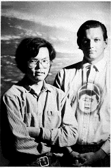
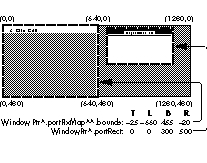

One very neat feature of the Macintosh is that you can connect more than one screen to
the computer and use them as if they were one big screen. Better still, applications
take advantage of multiple screens automatically. But the screens that are attached to
your system can have different sizes, depths, and color tables, and you might want to
optimize your application for each screen, or you might want to find the best screen to
display something on. Both these things are easy to do, but not necessarily in the ways
that you might think at first. In this column, we'll uncover a few important truths
about QuickDraw's handling of multiple screens, and we'll talk about a few ways to deal
with multiple screens if you want to go beyond what QuickDraw gives you for free.
It's important to understand that if you're just drawing items to a window and want to
stay completely above the specifics of different screens, don't do anything
special--just draw to your window as if there were one screen. QuickDraw was
designed to make multiple screens look like one, so you should take advantage of this
valuable abstraction if you can. Note too that machines with original QuickDraw can
also have multiple screens, but we don't describe that here.
Truth #1: Windows don't change their depth or color table when they're moved to
different screens.
One of the most common misconceptions about multiple screens is that a window's
pixMap holds the size, depth, and color table of the screen that the window is on. That
seems logical enough at first glance, especially considering that each screen has its
own pixMap. But it's not true, because a window can cross more than one screen.
Instead, the pixMap of a window always holds the depth, color table, and bounds
rectangle of the main screen (the one with the menu bar) even if the window is
nowhere near the main screen. The pixMap of a window is, in essence, a copy of the
main screen's pixMap, except for one detail: the bounds rectangle of a window's pixMap
is in the local coordinates of the window while the bounds rectangle of the main
screen's pixMap is in global coordinates. In fact, any screen's pixMap has a bounds
rectangle that's in global coordinates, indicating that screen's position relative to the
main screen.
To find the sizes, depths, or color tables of the screens your window is on, you should
use the list of GDevices that the system maintains (usually called thedevice list ),
which gives you the pixMap of each screen. We'll describe a method of using the device
list later.
Truth #2: There are exactly two coordinate systems.
With multiple screens, it's easy to get confused by what looks like many coordinate
systems, but there are only two: the local coordinate system of the current port and
the global coordinate system. QuickDraw has no concept of a coordinate system for
each screen. Global screen coordinates are always relative to the main screen--the
global coordinate (0,0) is always at the extreme upper left corner of the menu bar.
All coordinates in a graphics port are local coordinates, including the bounds rectangle
of the port's pixMap. This bounds rectangle has two purposes. First, it defines the area
of a pixel image that QuickDraw can draw into. Second, the top left point of the bounds
rectangle is the horizontal and vertical distance from the origin of the local coordinate
system to the origin of the global coordinate system. Specifically, if you subtract the
coordinate of the top left corner of the bounds rectangle from all the other coordinates
in a port, you convert those coordinates into the equivalent global coordinates.
An example of the relationship between the portRect of a window and the bounds
rectangle of its pixMap is shown in the following figure. The two screens in the
example are next to each other and are both 640 pixels across and 480 pixels down,
with the main screen on the left, and the window is contained entirely on the second
screen. Global coordinates are marked around the corners of the screens and the
portRect and bounds rectangle are marked with a dashed outline. Notice that the bounds
rectangle circumscribes the main screen, and it's in the local coordinates of the
window. If you subtract the components of the bounds rectangle's top left corner from
the coordinates of the portRect, you get the rectangle [T:25 L:660 B:325 R:1160],
which is the portRect in global coordinates.

Truth #3: QuickDraw switches to the GDevice of each screen your drawing crosses as
it's drawn.
When you draw something to a window, QuickDraw searches the device list for every
GDevice whose gdRect intersects your drawing. For each intersecting GDevice,
QuickDraw makes it the current GDevice and then draws the intersecting part of your
drawing. Switching GDevices is important because the current GDevice provides the
current color environment, which tells the system what color corresponds to each
pixel value and vice versa. As QuickDraw draws across your screens, it keeps
switching the current GDevice to the one for the screen it's actively drawing to.
Color environments are specific to each screen. Compare this with grafPorts and
cGrafPorts, which provide the screen-independent drawing environment that tells the
system things like the pattern, pen size, and color to use when drawing something.
Each window gets its own drawing environment, but has to share the color
environments with other windows.
Therefore, you should never switch GDevices to have QuickDraw draw to a specific
screen-- QuickDraw switches GDevices as appropriate. Whenever you have
QuickDraw draw to any screen, the current GDevice should be the main screen's
GDevice, which it is by default. The only time that you should switch GDevices
explicitly is to switch between on-screen and off-screen drawing.
Truth #4: On- and off-screen drawing are different.
QuickDraw distinguishes between on-screen and off-screen drawing for a couple of
reasons. Starting with 32-Bit QuickDraw 1.0, video memory can only be reached in
32-bit addressing mode. If QuickDraw detects that it's drawing to a screen, it switches
to 32-bit addressing mode, writes to video memory, and then switches back to the
native addressing mode. QuickDraw stays in the native addressing mode for the entire
operation when it draws off-screen unless bit 2 of the pmVersion field of the
destination pixMap is set or unless it draws into a GWorld that's cached on a
QuickDraw accelerator board. In those two cases, QuickDraw switches to 32-bit
addressing mode even though it's drawing off-screen. Another important difference
between on-screen and off-screen drawing is that on-screen drawing makes
QuickDraw go through the additional work of using the gdRects of the screens to
determine which GDevices you're drawing to. We described this in Truth #3. When
QuickDraw draws off- screen, it just uses the current GDevice.
QuickDraw senses whether it's drawing on-screen or off-screen by comparing the
baseAddr field of the current graphics port's pixMap against the baseAddr of the main
screen's pixMap. If they're equal, QuickDraw assumes that it's drawing on-screen (not
necessarily the main screen!). Otherwise, QuickDraw assumes that it's drawing
off-screen.
To avoid confusing QuickDraw regarding whether it's drawing on-screen or
off-screen, make sure that you always draw to a window for any on-screen drawing.
The pixMap of any window is a lot like the main screen's pixMap, as we described in
Truth #1, so the baseAddr of a window's pixMap is always the same as the baseAddr of
the main screen's pixMap.
TRUTH IN ACTION
There are several ways to use these truths so that your applications optimize their
displays for the sizes, depths, and color tables of each of the screens that are attached
to the systems your application runs on. What follows are a few ways to do this.
If your window is completely contained on one screen, you might want to optimize your
window's image for the screen it appears on. Usually, this means finding out the depth
and color table of the screen your window is on. The device list, introduced in Truth
#1, is invaluable for getting this information. For each GDevice in the list
(remember, each GDevice represents a screen), compare the rectangle of its gdRect
field against the rectangle of your window. The gdRect is in global coordinates while
your window's portRect is in local coordinates, so you'll have to convert one or the
other before doing the comparison. Once you've found the GDevice whose gdRect
encompasses your window, get the GDevice's pixMap from the gdPMap field. Within
this pixMap, the pixelSize field tells you the depth of the screen, and the pmTable field
gives you a handle to the screen's color table. The device list is a linked list; you can
get the first GDevice in the list with GetDeviceList, and you can go to the next GDevice
with GetNextDevice.
What if your window intersects more than one screen? A common way to deal with this
is to compromise by choosing a screen based on some criterion. You might want to
choose the deepest screen that your window crosses, or the screen that intersects most
of your window. The program listing at the end of this column shows a routine called
FindScreenGDevice that takes a rectangle in global coordinates and a criterion, and
returns the GDevice of the screen that satisfies the criterion. From this GDevice, you
can get the information you need from the pixMap in the gdPMap field. If you pass
kDeepestScreen for the criterion, FindScreenGDevice returns the GDevice of the
deepest screen that intersects the rectangle. If you instead pass kLargestAreaScreen,
the GDevice of the screen that has the largest intersection area is returned. Normally,
you'd convert your window's portRect to global coordinates with the LocalToGlobal
QuickDraw routine, and pass the resulting rectangle to FindScreenGDevice.
If your window displays an off-screen image and GWorlds are available, you can use
GWorlds to make an off-screen image with the best depth and color table for the
screens your window is on. If you pass 0 as the pixel depth to NewGWorld or
UpdateGWorld and pass a rectangle defining the part of your window that displays the
off-screen image in global coordinates, NewGWorld and UpdateGWorld set up an
off-screen graphics environment that has the same depth and color table as the deepest
screen your rectangle intersects, even if the area of intersection is as small as one
pixel.
In some cases, you might want to display an image specifically to one screen, maybe
for a presentations application or a game. To choose a screen, use a routine like
FindScreenGDevice. Once you've chosen a screen, set up a window that fills that entire
screen. Then draw to the window normally. In other words, you should again pretend
that there's only one screen available, except that you have a little bit of insider
information about where to put a window on that screen to make your images look or
act best. System 7 introduced the DeviceLoop routine, which is the recommended
method for drawing images that are optimized for every screen they cross. For
example, the highlight color can be drawn in black on a 1-bit screen, but in magenta
on a deeper screen. If your application is running on a pre-7.0 system, you can
simulate DeviceLoop by using a routine like DeviceLoopSim, as we show below. But to
maintain future compatibility, DeviceLoop should be used if it is available.
You don't have to do anything special to let your applications work with multiple
screens; QuickDraw makes multiple screens look like one screen. Use this abstraction
even if you want to take advantage of specific screens. Keep using QuickDraw at a high
level, and multiple-screen compatibility comes for free.
void DeviceLoopSim(
RgnHandle drawingRgn, /* Region to draw to */
DeviceLoopDrawingProcPtr drawingProc,
/* Routine to call to draw */
long userData, /* User-definable data */
DeviceLoopFlags flags) /* Options; not implemented */
{
GDHandle aGDevice; /* GDevice of each screen */
RgnHandle screenRgn;
/* Intersection of screen area and drawingRgn */
RgnHandle savedClip;
/* Saves the current port's clipping region */
Rect screenRect;
/* Rectangle of screen in global coordinates */
/* Save the current port's clipping region */
savedClip = NewRgn();
GetClip( savedClip );
/* Loop through every GDevice in the device list */
screenRgn = NewRgn();
aGDevice = GetDeviceList();
while (aGDevice != nil)
{
/* Find region of intersection between screen and */
/* drawingRgn */
screenRect = (**aGDevice).gdRect;
GlobalToLocal( &topLeft( screenRect ) );
GlobalToLocal( &botRight( screenRect ) );
RectRgn( screenRgn, &screenRect );
SectRgn( screenRgn, drawingRgn, screenRgn );
/* If there is an area of intersection, call drawing proc */
if (!EmptyRgn( screenRgn ))
{
SetClip( screenRgn );
(*drawingProc)( (**(**aGDevice).gdPMap).pixelSize,
(**aGDevice).gdFlags, aGDevice, userData );
}
/* Go to the next GDevice in the device list */
aGDevice = GetNextDevice( aGDevice );
}
SetClip( savedClip );
DisposeRgn( savedClip );
DisposeRgn( screenRgn );
}
enum { kDeepestScreen, kLargestAreaScreen };
GDHandle FindScreenGDevice(
Rect * bounds,
/* Global rectangle of part of screen to check */
short screenOption)
/* Use deepest or largest intersection area screen */
{
GDHandle baseGDevice; /* GDevice that satisfies criterion */
GDHandle aGDevice;
/* Handle to each GDevice in the GDevice list */
long maxArea; /* Largest intersection area found */
long area; /* Area of rectangle of intersection */
Rect commonRect; /* Rectangle of intersection */
/* Different screen options require different algorithms */
if (screenOption == kDeepestScreen)
/* Graphics Devices Manager tells us the deepest */
/* intersecting screen */
baseGDevice = GetMaxDevice( bounds );
else if (screenOption == kLargestAreaScreen)
{
/* Get a handle to the first GDevice in the device list */
aGDevice = GetDeviceList();
/* Keep looping until all GDevices have been checked */
maxArea = 0;
baseGDevice = nil;
while (aGDevice != nil)
{
/* Check to see whether screen rectangle and bounds */
/* intersect */
if (SectRect( &(**aGDevice).gdRect, bounds,
&commonRect ))
{
/* Calculate area of intersection */
area = (long)(commonRect.bottom - commonRect.top) *
(long)(commonRect.right - commonRect.left);
/* Keep track of largest area of intersection */
/* found so far */
if (area > maxArea)
{
maxArea = area;
baseGDevice = aGDevice;
}
}
/* Go to the next GDevice in the device list */
aGDevice = GetNextDevice( aGDevice );
}
}
return baseGDevice;
}
FORREST TANAKA Just before fastening that buckle on his bike helmet and snapping
into those pedals, Forrest whispered, "Howdy, my name is Forrest; I don't drink, and I
hate nicknames and terms of endearment. But I firmly believe that real life is more
exciting and fantastic than the best fiction, except for Antoine de Saint-ExupÉry's The
Little Prince ."*
BILL ("ANGUS") GUSCHWAN Stopping between moguls after some maney fakey
shredding on his snowboard, Bill borrowed a few clock hands to say "Hi, my name is
Angus; I like tacos, '71 Cabernet, and my favorite color is magenta." His favorite
philosopher, Ludwig Wittgenstein, would be proud of his brevity. *
The device list is documented in the section "The Graphics Device Record" in
Chapter 21 ofInside Macintosh Volume VI. *
DeviceLoop is described in Chapter 21 of Inside Macintosh Volume VI. *
For information about using the Picture Utilities Package to find colors
that are optimized for different screen depths, see the article "In Search of the Optimal
Palette" later in this issue. *
Thanks to Edgar Lee, Guillermo Ortiz, and John Wang for reviewing this column. *